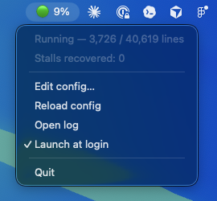

Watches your CNCjs sender on grbl.local, catches the stall where Grbl sits idle while the job still says “running,” and kicks it back to life — pause, resume, keep drawing.

# clone & set up git clone https://github.com/emileaublet/cncjs-watchdog.git cd cncjs-watchdog python3 -m venv venv && ./venv/bin/pip install -r requirements.txt # build the menu bar app ./venv/bin/python setup.py py2app open "dist/CNCjs Watchdog.app"
Then set your CNCjs secret in ~/.cncjs-watchdog.json — see the README.